So far we have thought of at stars as simplified balls of hot gas. In this part we will start to invetigate the composition and structure of stars. As we have seen, there are dark lines in the spectra of stars that can reveal their composition.
4.1 Vogt-Russell Theorem
In the structure and evolution of a star, the “Vogt-Russell theorem” plays an important role. It states that the structure of a star, in hydrostatic and thermal equilibrium, with all energy derived from nuclear reactions, is uniquely determined by its mass and the distribution of chemical elements throughout its interior.
In Chapter 2 we already gave an introduction to the spectral classification, based on the chemical elements present in the stars, and we anticipated that these can be determined through spectroscopy.
Spectroscopy is the method for identifying the elements by their spectral lines.
Remember KircHhoff’s Laws from Chapter 2 (see Figure 2.12):
- 1. A hot and opaque solid, liquid or highly compressed gas emits a continuous blackbody as-named by Kirchhoff spectrum with no spectral lines
- 2. A hot, transparent gas, illuminated by a continuum source, produces a spectrum of bright emission lines
- 3. If a continuous spectrum passes through a transparent gas at a lower temperature, the cooler gas will absorb at characteristic wavelengths resulting in dark absorption lines
Kirchoff’s laws tell us that the absorption lines indicate the presence of a cooler layer of diffuse gas, on top of a hot layer of denser gas.
In order to understand the structure and the evolution of a star, it is therefore important to study its chemical composition both of the core and of its atmosphere. Let’s start by looking at the Sun.
4.2 The Sun’s atmosphere
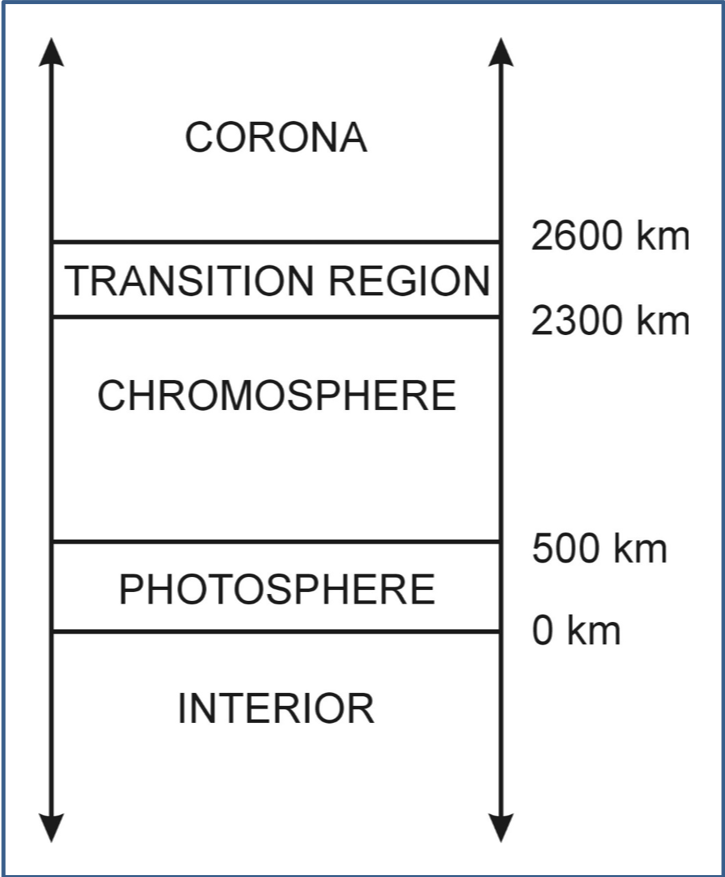
When we observe the Sun, we see light from:
- The Photosphere
- The Chromosphere
- The Transition Region
- The Corona
in descending order of contribution.
4.2.1 The Photosphere
The Sun has no solid surface but becomes opaque to visible light at the photosphere.
The photosphere is about 500 km thick and temperature, T , varies throughout.
- \(T_{base} \approx 6500 \mathrm{K}\)
- \(T_{top} \approx 4400 \mathrm{K}\)
Most of the light comes from a region where the temperature \(T \approx 5800\) K, where the density is about one thousandth that of air.
So the Sun is not a perfect black-body with a single temperature.
What do you notice from the videos below?
The Photosphere is marked by:
- Bright, bubbling granules of plasma
- Solar flares (electromagnetic eruptions)
- Darker, cooler sunspots
Sunspots are NOT really cool, just about 1500K cooler than the rest of the photosphere
Sunspots appear to move across the Sun’s disk, showing us that the Sun is actually rotating
The Sun is a ball of gas, not a solid, and different regions rotate at different rates
The Sun’s equatorial regions rotate in about 24 days
The polar regions take more than 30 days
Solar flares - extending hundreds of thousands of miles above the surface - originate in the photosphere
These flares produce bursts of radiation across the electromagnetic spectrum, from X-rays, to radio waves (see Figure 4.2).
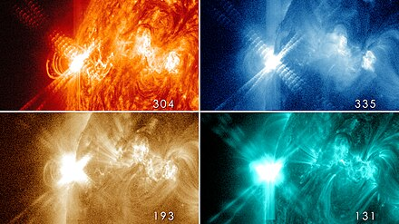
4.2.2 The Chromosphere
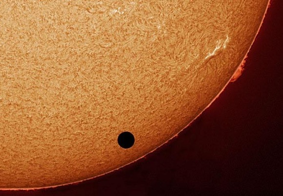
- We get only a little light from the chromosphere – the next layer of gas
- The chromosphere is seen as a dim reddish-pink glow from super-heated Hydrogen
- The glow is only really seen during an eclipse
- At other times, light from the chromosphere is usually too weak to be seen against the brighter photosphere
- The chromosphere is about 2000 km thick
- It is hottest furthest from the Sun: \(T \approx 20000\) K
4.2.3 The Transition Region
- The transition region is a layer of ~300 km between the chromosphere and the corona.
- The temperature in the transition region increases very rapidly within 100 km towards the corona, reaching over \(10^5\) K.
- The increase of temperature then becomes less sharp, reaching \(~10^6\) K at the top of the transition region.
4.2.4 The Corona
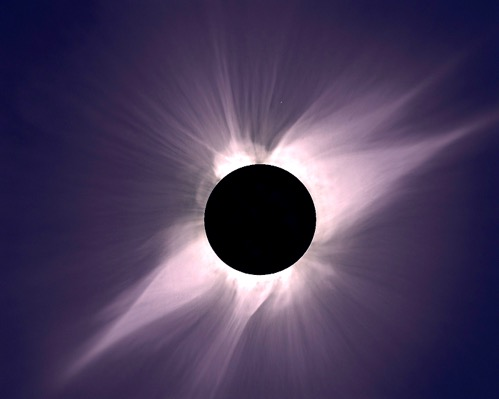
- Very hot : \(T\approx 10^6\) K
- Outer atmosphere, extending as far as \(\approx 3 R_\odot\)
- Again, only really seen visually from Earth during an eclipse
- Together with the chromosphere, it contributes about \(10^{-4} L_\odot\)
- Very diffuse and eventually leads to the Solar Wind
- the solar wind stretches out to about 100 AU
- its effect is seen on Earth as the Aurora
4.2.5 Solar activity
Solar flares can produce aurora (Figure 4.5, Figure 4.6).
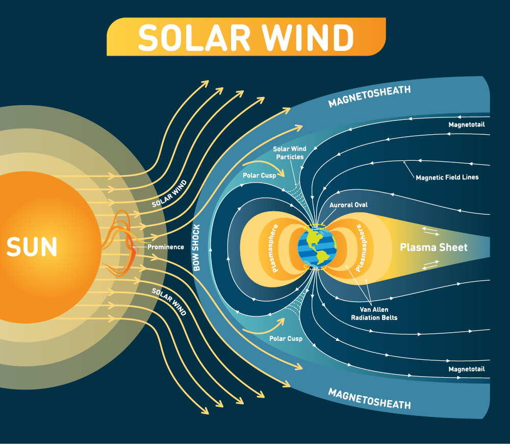
4.2.6 Solar observations
Observations of the Sun at different wavelengths can reveal different structures in the solar atmosphere (Figure 4.7, Figure 4.8).
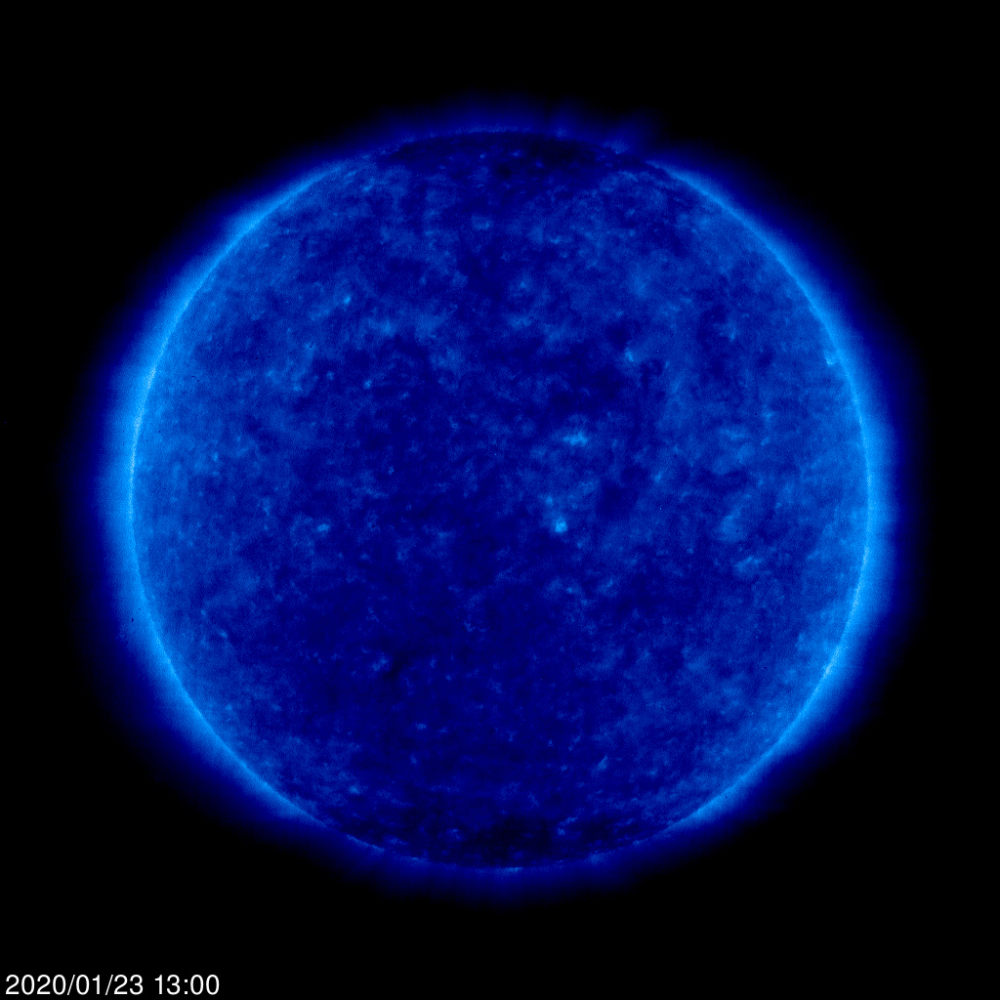
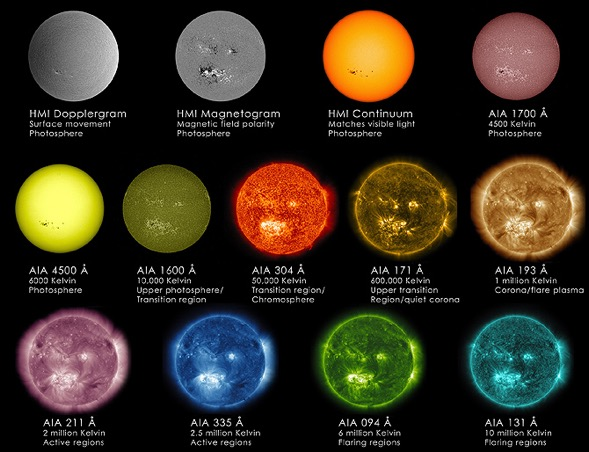
4.3 Spectroscopy
We talked in Chapter 2 about absorption and emission spectra, and how these can be used in spectroscopy to learn about the composition of stars.
Let’s look at a star spectrum, such as Figure 2.20.
- Each chemical element has its unique spectral line fingerprint
- From a measurement of its spectrum, the pattern of lines seen allows identification of the elements in a star’s atmosphere
- Strengths of the spectral lines tells us about stellar temperature; line strength depends on
- number of atoms present
- temperature of the gas
4.3.1 Doppler shifts
In Chapter 3 we saw that in spectroscopic binaries we can measure the speed of stars by measuring the doppler shift of the spectral line. These are the result of the motion of the stars towards and away from us (see Figure 3.15).
We saw however that stars (e.g. the Sun) are not rigid bodies, so the activity of the atmosphere can also cause doppler shifts.
- Wavelengths and ‘widths’ of lines are affected by Doppler shifts due to the motion of the stellar atmosphere
- Effects on lines due to bulk motions allow measurement of overall rotation and large-scale expansion or contraction (e.g.: Cepheids)
- Effects on lines due to random thermal motions of atoms in the atmosphere allow measurement of temperature and pressure
- But it can be hard to disentangle all of these!
4.3.2 Explanation of spectral lines: the Bohr model
We really need Quantum Mechanics to accurately understand spectral lines. However, we can simplify the explanation using the Bohr Model of the atom. This works well for Hydrogen, and sometimes for other elements too. Since most of the Sun is made of Hydrogen, we will stick to this simple picture for the moment.
In the Bohr model:
- Electrons, bound in atoms, are only allowed certain energies
- These energies correspond to certain ‘orbits’ around the nucleus (Figure 4.9)
- These orbits must have angular momenta equal to an integer multiple of a universal constant – Planck’s constant
- Only photons with energies corresponding to differences between energy levels can be emitted or absorbed

The energy of the n-th level of hydrogen is given by the relationship \[ E_n = -\frac{13.6}{n^2}\,\mathrm{eV}, \tag{4.1}\] and they are represented in Figure 4.10.
eV is an electron-volt, a small unit of energy (not voltage!) - \(1\, \mathrm{eV} = 1.602\times 10^{-19}\, \mathrm{J}\)
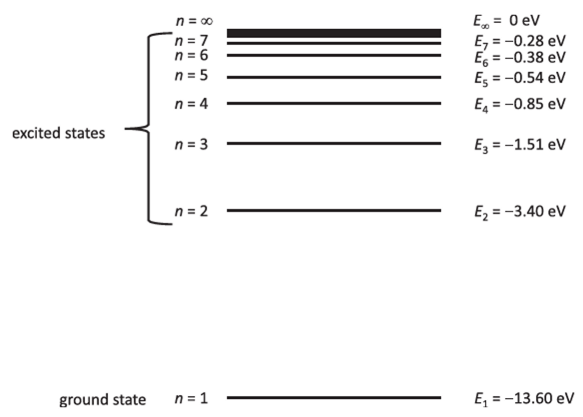
The energies are negative because they refer to ‘bound states’, where the electrons are in their orbits around the nucleus.
For a transition between level \(m\) (final state) and level \(n\) (initial state), the photon emitted or absorbed would have energy corresponding to the energy difference between the states \[ \Delta E_{mn} = E_m - E_n = 13.6\, \mathrm{eV}\left(\frac{1}{n^2} - \frac{1}{m^2}\right). \tag{4.2}\]
From quantum theory we can relate the energy to the wavelength: \(\Delta E_{mn} = \frac{hc}{\lambda_{mn}}\).
So this means we can calculate the wavelength of the emitted photon: \[ \frac{1}{\lambda_{mn}} = R_\infty \left(\frac{1}{n^2} - \frac{1}{m^2}\right). \tag{4.3}\]
All the constants are hidden in \(R_\infty\). This equation is the Rydberg Equation.
\(R_\infty = 1.097\times 10^{7}\,m^{-1}\) is the Rydberg constant.
This formula is valid for both emission and absorption transitions.
Depending on the values of \(m\) and \(n\), we can calculate the characteristic wavelengths (of the lines) corresponding to several series of transitions.
Emission
- Electron drops to a lower level
- Photon is emitted, of energy corresponding to the energy difference between the transition levels
Absorption
- Electron jumps to a higher level
- Photon of the correct energy – corresponding to the energy level difference – is needed for this to happen
When doing calculations remember that the result for wavelength must be
- positive for absorption transitions (\(n < m\))
- negative for emission transitions (\(n > m\)).
4.3.3 Question
Calculate the energy of a photon:
- emitted by a hydrogen atom going from the state \(n=3\) to \(m=2\)
- absorbed by a hydrogen atom undergoing the transition from \(n=1\) to \(m=2\).
Do you expect a positive or negative sign for each case?
Solution
Using Equation 4.2:
\[ \begin{aligned} \Delta E_{23}&=E_2-E_3=13.6\,\mathrm{eV}\left(\frac{1}{3^2}-\frac{1}{2^2}\right)\\ &=-1.89\,\mathrm{eV}. \end{aligned} \]
\[ \begin{aligned} \Delta E_{21}&=E_2-E_1=13.6\,\mathrm{eV}\left(\frac{1}{1^2}-\frac{1}{2^2}\right)\\ &=10.2\,\mathrm{eV}. \end{aligned} \]
4.3.4 Series of lines in Hydrogen
In Hydrogen some of the transitions have special names. The spectral lines originating from the transitions going from higher energy levels to \(n=1, n=2, n=3\) are called respectively Lyman series, Balmer series and Paschen series. These are represented in Figure 4.11.
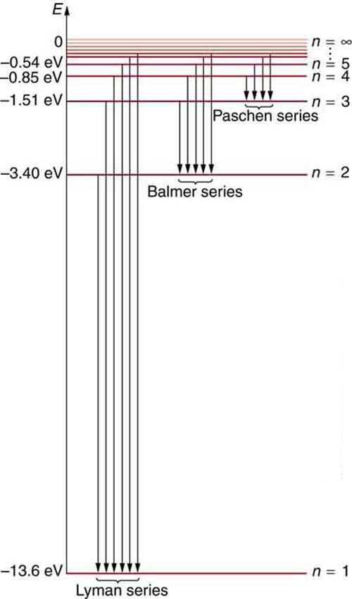
Lyman Series (Ly): Transitions between excited states \(m>1\) and the ground state (\(n=1\)), in the ultraviolet.
- Ly\(\alpha\): m=2 to n=1
- Ly\(\beta\): m=3 to n=1
- etc
Balmer Series (H): Transitions between \(m>2\) and \(n=2\), in the visible.
- H\(\alpha\): m=3 to n=2
- H\(\beta\): m=4 to n=2
- etc
Paschen Series (P): Transitions between \(m>3\) and \(n=3\), in the infrared.
- P\(\alpha\): m=4 to n=3
- P\(\beta\): m=5 to n=3
- etc
The ones listed here are emission transitions, but the same is valid for absorption transitions, swapping initial and final states.
4.3.5 Spectral lines in the light from the Sun
The strongest visible absorption line from solar hydrogen is H\(\alpha\) at \(656.3\) nm (labelled \(C\) in Figure 4.12).

- We see this in absorption in the chromosphere
- We see other atoms in absorption: hydrogen, helium, magnesium, sodium, iron, chromium …
- There are about 250,000 lines in total (see Figure 2.10)
- Identify by heating elements in the lab and observing spectra
4.3.6 Boltzmann distribution
Will H\(\alpha\) absorption happen?
H\(\alpha\) absorption involves an electron going from from \(m = 2\) to \(n = 3\) - i.e. the electron must already be in an excited state!
The electron gets from the ground state (\(n=1\)) to the \(n = 2\) state by thermal excitation. The probability of an electron occupying energy state \(E\) is given by the Boltzmann distribution: \[ P(E) \propto \exp\left(-\frac{E}{k_B T}\right) \tag{4.4}\]
here \(k_B = 1.381\times 10^{-23}\, \mathrm{JK}^{-1}\) is Boltzmann’s constant.
The minus sign in the exponential tells us that states with \(E\gg k_BT\) are very improbable.
4.3.7 Energy level occupation
The \(n\)-th energy shell in the atom can hold up to \(2(n^2)\) electrons.
This means that
- 2 electrons can occupy the \(n = 1\) shell
- 8 electrons can occupy the \(n = 2\) shell
If there are 8 possible states in the n=2 shell, there is 8 times the probability of finding an electron there.
So we can calculate the ratio of the population of atoms in the two states from:
\[ \frac{N_2}{N_1}=\frac{8\exp(-E_2/k_BT)}{2\exp(-E_1/k_BT)}= \frac{8}{2}\exp -\frac{\Delta E_{21}}{k_BT} \tag{4.5}\]
Here \(\Delta E_{21}\) is the energy difference between the n = 1 and n = 2 states.
4.3.8 Energy difference for Hydrogen lines
For Ly\(\alpha\) we have
\[ \Delta E_{21} = h\nu_{21} = hc/\lambda_{21} \]{#eq-deltaE21-h1},
\[ \Delta E_{21} = hcR_\infty\left(\frac{1}{1^2}-\frac{1}{2^2}\right)= 1.64\times 10^{-18}\,\mathrm{J}. \tag{4.6}\]
What fraction of atoms are in the \(n=2\) state?
For \(T=6000\)K, we find: \[ \frac{N_2}{N_1} \approx 10^{-8}, \tag{4.7}\]
i.e. 99,999,999 out of every 100 million hydrogen atoms is in the ground state.
So this transition is very unlikely at this temperature.
We still see this line though because there is just so much hydrogen in the Sun.
4.3.9 Rydberg Equation for other elements
- The Rydberg equation is a good approximation for Hydrogen.
- Fails to take account of eletron orbital screening in heavier elements
- But for single-electrons around heavier nuclei (i.e nearly fully ionised atoms) we can write
\[ \frac{1}{\lambda_{nm}} = Z^2 R_\infty\left(\frac{1}{m^2} - \frac{1}{n^2}\right), \tag{4.8}\]
where \(Z\) is the atomic number of the element.
4.4 Ionisation
- Under extreme conditions atoms can be ionised
- If an atom is ionised it loses (one or more) electrons: these are no longer bound to the nucleus, they are free
- Atoms can lose electrons if they absorb enough energy from photons
- For hydrogen, this requires a minimum ionisation energy, \(\chi\)
- We can find \(\chi\) by using the Rydberg Equation (Equation 4.3) with \(m=\infty\), corresponding to the energy \(E_\infty = 0\) where the electron is free (see Figure 4.10).
\[ \begin{aligned} \chi &= hc R_\infty\left(\frac{1}{n^2} - \frac{1}{\infty^2}\right)\\ &= E_{\infty}-E_1=\frac{13.6}{n^2}\mathrm{eV}. \end{aligned} \tag{4.9}\]
This is the energy required to remove an electron from an energy level \(n\) to the level \(m=\infty\) (where it is no longer bound to the nucleus).
When the electron has been knocked out of the atom, an ion is left.
4.4.1 Ion formation
Ions formation occurs when some form of external energy ‘impacts’ the electrons in the atom. Due to conservation of energy, if this external energy is larger than the ionisation energy, electrons will be ejected.
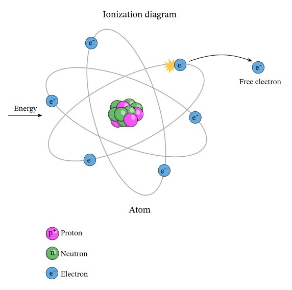
This can occur due to two possible processes that introduce external energy:
- Absoption of a photon with energy \(E\geq \chi\)
- Scattering: collision with another particle like an electron (this is also known as impact ionisation or collision ionisation).
4.4.1.1 Ion formation by photon absorption
- In a black-body with temperature \(T\), photons have a distribution of energies
- The average photon has energy \(E=k_B T\), but some have higher energy
- Only photons with energies greater than the ionisation energy, \(\chi\) , can cause ionisation to happen
There will always be some sufficiently energetic photons.
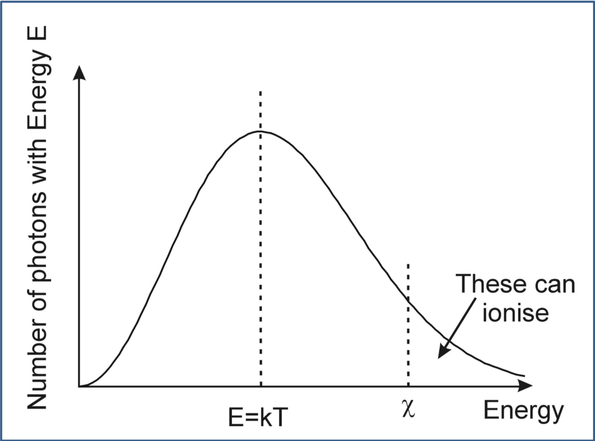
4.4.1.2 Ion formation by scattering
Atoms in hot and dense gases can be ionised due to thermal collisions. Collisions can occur with other particles, e.g.: electrons. These are determined by the average kinetic thermal energy of the gas \[ E=\frac{3}{2}k_B T. \tag{4.10}\]
The principle governing impact ionisation is the conservation of energy. The energy keeping the electron bound to the nucleus (and therefore the ionisation energy) is a form of potential energy. If the kinetic energy of a particle hitting the electron is \(E>\chi\), then the conservation of energy will ensure that the electron is ejected from the atom.
What proportion of atoms do we expect to be ionised?
We need to find the equilibrium in the following reaction:
external energy source + atom \(\leftrightharpoons\) electron + ion,
where the external energy source can be a colliding particle or a photon.
The answer to this is given by the Saha Equation:
\[ \frac{\mathrm{number\ of\ atoms}}{\mathrm{number\ of\ ions}} \approx \frac{10^{21} T^{3/2} \exp(-\chi / k_B T)}{\mathrm{number\ of\ electrons}}. \tag{4.11}\]
The rule of thumb is that 50% ionisation occurs when \(k_B T \approx \chi /18\).
4.5 Spectra and chemical composition
4.5.1 Chemical composition of the Solar Photosphere
- Temperature \(T\approx 6000\)K
- \(18 k_BT \approx 9.3\,\mathrm{eV}\)
| Element | Ionisation Energy (eV) | Status in photosphere |
|---|---|---|
| H | 13.6 | a few ions |
| He | 24.6 | effectively no ions |
| Na | 5.14 | almost fully ionised |
| Fe | 7.9 | almost fully ionised |
4.5.2 Line strength
Line strength depends on two things:
- Element abundance
- Temperature
Temperature is critical because it determines
- the number of atoms in the correct state
- the number of photons with enough energy to cause transition.
Line strength is, therefore, a good indicator of temperature.
4.5.3 Effects of temperature
- If a gas gets too hot, all the atoms may already be ionised
- There may not be any low-level electrons able to absorb energy
- There may not be any high-level electrons able to emit energy
- If a gas is too cool, electrons may be in too low an energy state for a particular line
- Remember that Balmer absorption needs n = 2
Line strengths of different elements vary with temperature in different ways. This is crucial to the Harvard Classification scheme we looked at before (for the following it will help to refer to Figure 2.19).
4.5.3.1 Effects of temperature on Hydrogen lines
In what follows we will consider only spectral lines in the visible part of the spectra (Balmer series for hydrogen).
Balmer series is strongest when \(T\approx 10^4 K\).
- If it’s cooler, there are not enough photons to excite electrons
- If it’s hotter, the atmosphere is fully ionised
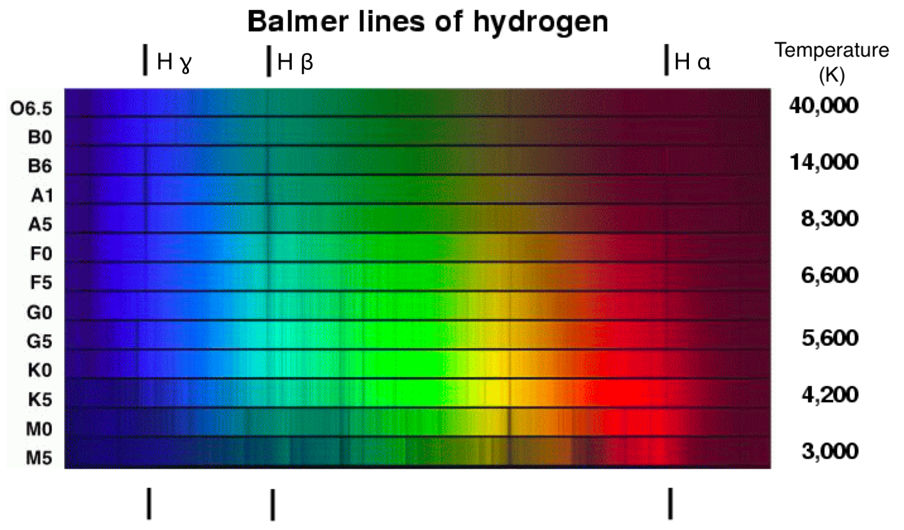
4.5.3.2 Effects of temperature on Helium lines
For visible lines, require \(T > 10^4\) K
Best temperature is \(T\approx 25000\) K.
- Little is seen from the Sun in absorption although they are observed faintly in the upper chromosphere during eclipses
- Helium ions can also be excited to a state that gives visual absorption lines if the temperature is ~350000 K, as in the corona.
4.5.3.3 Metal lines
- In astronomy, ‘Metal’ means all elements after helium in the periodic table!
- These are very rare (~ 0.1% of the stellar atmosphere)
- Metal lines only dominate at low temperatures where hydrogen and helium are ‘frozen out’
- Strong lines from singly ionised calcium and iron are observed, as are those from singly and doubly ionised iron if it’s hot enough
The relative abundances of metals in all stars is fairly similar.
However the abundance of metals relative to hydrogen is very different in some stars!
4.5.4 Population I stars
The ratio of metals to hydrogen and helium is very much like that found in the Sun.
- Young stars, generally made from material ejected from older stars
- They’ve formed late in the evolution of the Galaxy and, for that reason are found predominantly in the Galactic disk
4.5.5 Population II stars
The ratio of metals to hydrogen and helium is 100 times less than that found in the Sun
- These are ‘metal poor’ stars
- They are old stars, formed before the Galaxy was a disk and, therefore, are found predominantly in the Galactic halo
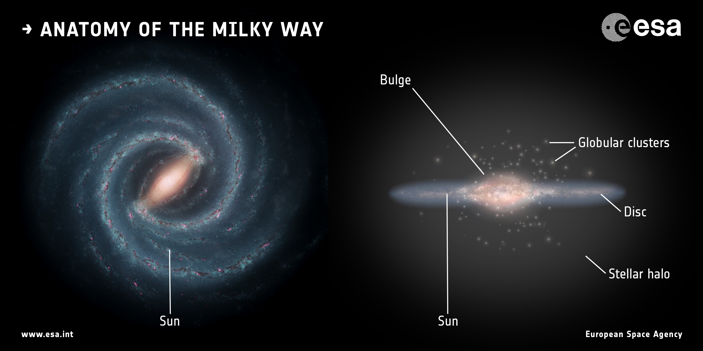
4.5.6 Chemical Composition of the Universe
| Element | % of total atoms |
|---|---|
| H | ~85% |
| He | ~15% |
| C, N, O, Ne | ~0.1% Each |
| Si, Mg, Fe, Al | ~0.01% Each |
What is the origin of the elements?
4.5.7 Molecular Bands
In Figure 2.17 we saw that M-type stars have absorption molecular bands.
Molecules can form in the outer atmospheres of cool stars.
The typical binding energies of molecules are 4 - 6 eV.
This means that the lines will ‘fade out’ if T > ~5000 K
We observe TiO, ZrO, CN and sometimes even H\(_2\)O.
4.6 Recap
- The stellar structure, radius and luminosity of a star in thermal and gravitational equilibrium depends upon its chemical composition and mass (Vogt-Russell theorem).
- The Sun’s atmosphere is composed by the photosphere, the chromosphere, the transition region and the corona. The photosphere is the one contributing the most to the intensity.
- Spectral lines and their strengths are due to abundance of chemical elements in a star and its temperature.
- Using the Bohr model we can obtain the Rydberg equation to explain transitions that generate spectral lines in hydrogen and almost fully ionised atoms.
- Ionisation occurs when an atom loses electrons either due to absorption of photons or collisions with other particles.
- The temperature of a star affects the proportion of atoms ionised (Saha equation) and the strength of the spectral lines of the various chemical elements.